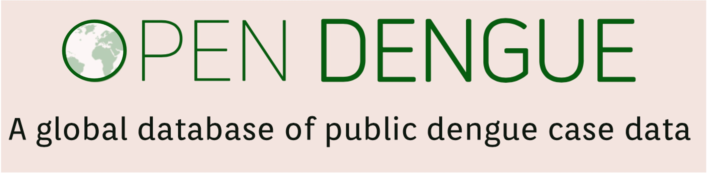
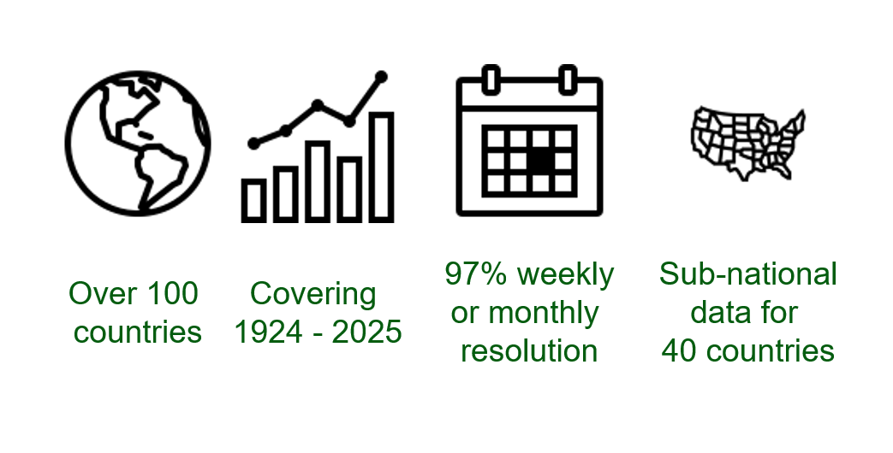

OpenDengue
Access the data
Please visit our Data page for download options, database details, definitions and limitations.
Suggested citation:
The preferred citation for OpenDengue is the citation of our research paper in addition to the Figshare repository link to the specific version of the dataset used:
“Clarke J, Lim A, Gupte P, Pigott DM, van Panhuis WG, Brady OJ. A global dataset of publicly available dengue case count data. Sci Data. 2024 Mar 14;11(1):296.”
“Clarke J, Lim A, Gupte P, Pigott DM, van Panhuis WG, Brady OJ. OpenDengue: data from the OpenDengue database. Version [1.3]. figshare; 2025. Available from: https://doi.org/10.6084/m9.figshare.24259573.”
About OpenDengue

The OpenDengue project aims to build and maintain a database of dengue case counts for every dengue-affected country worldwide since 1990 or earlier. We collate data from a range of publicly available sources including ministry of health websites, peer-reviewed publications and other disease databases. Learn more about the project or our methods.
The database will continue to be developed over the coming years in different versions. The current release (Version 1.3) adds case definitions as well as addressing some double case counting bugs. We are currently finalising a manuscript that details all the work done on OpenDengue so far. Future versions will add disaggregate dengue case counts by severity, method of confirmation, age and serotype where such data are available.
We are continually adding new data to the OpenDengue repository. If you are aware of publicly available data that we have not yet found, please contribute or get in touch.

Potential uses
OpenDengue draws together and standardises data from multiple sources that enable new analyses at global and regional scales. Examples include:
- Identifying worst affected areas and years
- Understanding drivers of transmission such as climate factors and interventions
- Predicting future trends and outbreak risk
Summary of data coverage
Our goal at the OpenDengue project is to fill as many of these gaps as we can. If you know of any publicly available data sources for any of the grey or light coloured countries or years in the above figures please contribute or get in touch.